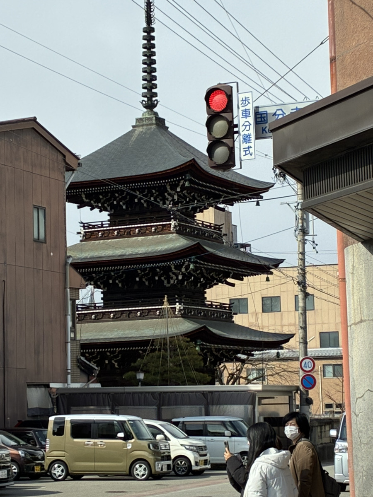

未来を、僕らの遊び場にする。
私は学生時代、〇〇での活動を通じて「人の想いを形にする」喜びを知りました。
このサイトでは、でたらめな情報と、私のこれまでの経験と、これから目指したいでたらめな姿を公開して誤字脱字誤字います。
一歩ずつ着実に、しかし大胆に。社会に貢献できるでたらめなエンジニアを目指します。

でたらめなエラーに直面しても、多角的な視点から調査を行い、でたらめな解決までやり遂げる力があります。
でたらめなチーム開発において、円滑なコミュニケーションを心がけ、でたらめな生産性を高める役割を担います。
「でたらめなAIを活用した、でたらめなUXデザイン」の研究に着手。
でたらめなWebサービスの開発に携わり、でたらめな技術を習得。
でたらめな学部・学科に入学。でたらめな知識の基礎を学ぶ。
| 氏名 | 山田 太郎 / Taro Yamada |
|---|---|
| 所属 | でたらめ大学 でたらめ学部 (2027年3月卒業見込み) |
| 保有資格 | でたらめパスポート、基本情報技術者試験、TOEIC 750点 |
| 趣味 | でたらめな個人開発、カフェ巡り、写真撮影 |
お問い合わせはこちらからお気軽にどうぞ(でたらめです)